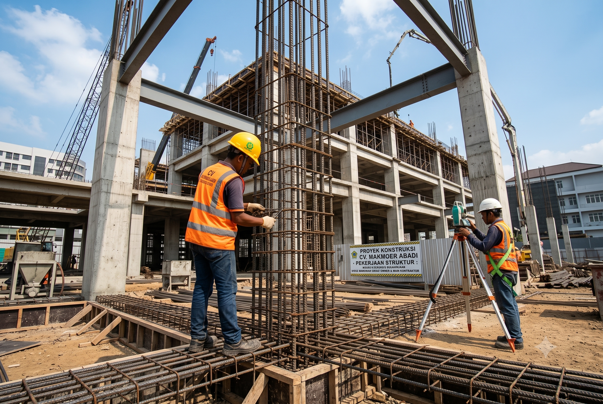

Kami Memberikan Solusi Konstruksi Terbaik
Berfokus pada bidang Sub Kontraktor Struktural & Finishing, kami memberikan mutu yang terbaik, tepat waktu, tepat biaya, dan tepat manfaat.

Pekerjaan Struktur
Pengerjaan struktur bangunan yang kokoh, terukur, dan dikerjakan oleh SDM yang kompeten untuk memberikan hasil maksimal bagi Owner maupun Main Kontraktor.
Pekerjaan Finishing
Solusi komprehensif untuk tahapan penyelesaian bangunan. Kami memastikan detail estetika dan kualitas teraplikasikan dengan sempurna sesuai dengan mock up.
Pemasangan Bata
Jasa pemasangan dinding menggunakan material bata merah konvensional maupun bata ringan dengan tingkat presisi, kekuatan, dan kerapian yang tinggi.
Plester, Aci & Render
Pelapisan dinding secara profesional melalui teknik plester aci konvensional maupun menggunakan mortar instan (render) untuk hasil dinding yang halus.
Pemasangan Keramik
Ahli dalam pengerjaan instalasi lantai maupun dinding keramik dengan pola ukur yang teliti untuk memastikan simetri dan estetika interior bangunan Anda.
Supervisi & Inspeksi
Penerapan metode kerja terpadu melalui supervisi, pengawasan ketat, serta inspeksi hasil akhir pekerjaan guna memastikan kesesuaian dengan standar kualitas.